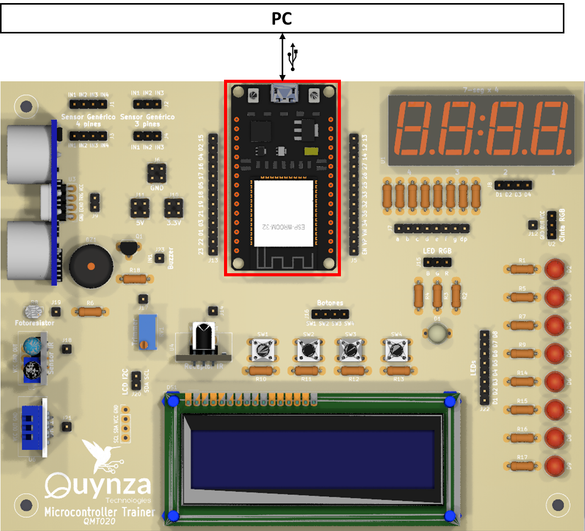
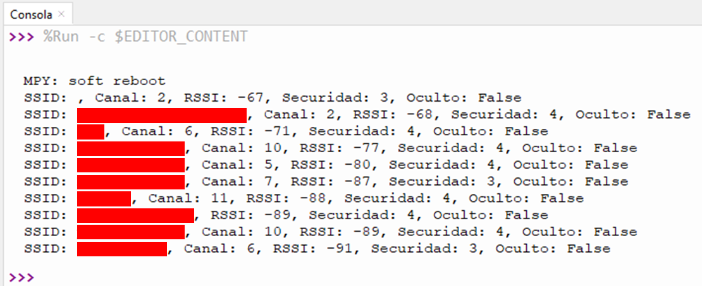

Ejercicio 3-1: Visualizar lista redes WiFi
Descripción
Usando Micropython, con el Ejercicio 3-1: Visualizar lista redes WiFi se va a aprender a leer las redes WiFi disponible mediante un ESP32 mostrando las diferentes especificaciones técnicas de cada una.
Para este ejercicio se necesita el Entrenador ESP32, el cual puede ser adquirido en este link al mejor precio!

Código
Para este ejercicio se necesitará el archivo:
- main.py: Script principal que contiene el código para la visualización de la lista de redes WiFi disponibles
main.py
Se debe crear el archivo main.py que contiene el siguiente código:
import network wlan = network.WLAN(network.STA_IF) # create station interface wlan.active(True) # activate the interface listWifi = wlan.scan() # scan for access points for item in listWifi: ssid = item[0].decode('utf-8') channel = str(item[2]) rssi = str(item[3]) security = str(item[4]) hidden = str(bool(item[5])) print("SSID: "+ ssid + ", Canal: "+ channel + ", RSSI: "+ rssi + ", Securidad: "+ security + ", Oculto: "+ hidden)
Explicación paso a paso:
main.py
En primer lugar importamos la librería network. Esta librería permite al ESP32 conectarse a una red WiFi:
import network
Después se va a configurar al ESP32 en el modo Estación WiFi:
wlan = network.WLAN(network.STA_IF) # create station interface
Luego se procede a activar la estación:
wlan.active(True) # activate the interface
Finalmente, se llama al método scan de la clase WLAN para generar la lista de redes WiFi que el módulo WLAN del ESP32 detecta:
listWifi = wlan.scan() # scan for access points
Para cada red WiFi guardada dentro de la lista, se construye una dupla conformada por los siguientes especificaciones:
- SSID: Identificador de red SSID
- BSSID: Identificador único de cada dispositivo inalámbrico o dirección física MAC (Media Access Control)
- Channel: Rango de frecuencia usada en la red (según el estándar WiFi)
- RSSI: Indicador de intensidad de señal recibida (medida en dBm)
- Seguridad:
- 0: Abierto
- 1: WEP
- 2: WPA-PSK
- 3: WPA2-PSK
- 4: WPA/WPA2-PSK
- Oculto: Determina si la red Wi-Fi tiene su transmisión SSID desactivada
Se recorre cada item de la lista generada por medio de un ciclo for, y para cada uno se muestra en consola los valores de sus especificaciones:
for item in listWifi: ssid = item[0].decode('utf-8') channel = str(item[2]) rssi = str(item[3]) security = str(item[4]) hidden = str(bool(item[5])) print("SSID: "+ ssid + ", Canal: "+ channel + ", RSSI: "+ rssi + ", Securidad: "+ security + ", Oculto: "+ hidden)
Testeo en ESP32
Primero, se realiza la conexión del ESP32 a nuestro ordenador mediante USB:

Luego ejecutamos el script main.py mediante el software Thonny, y se va mostrar un mensaje como este:
